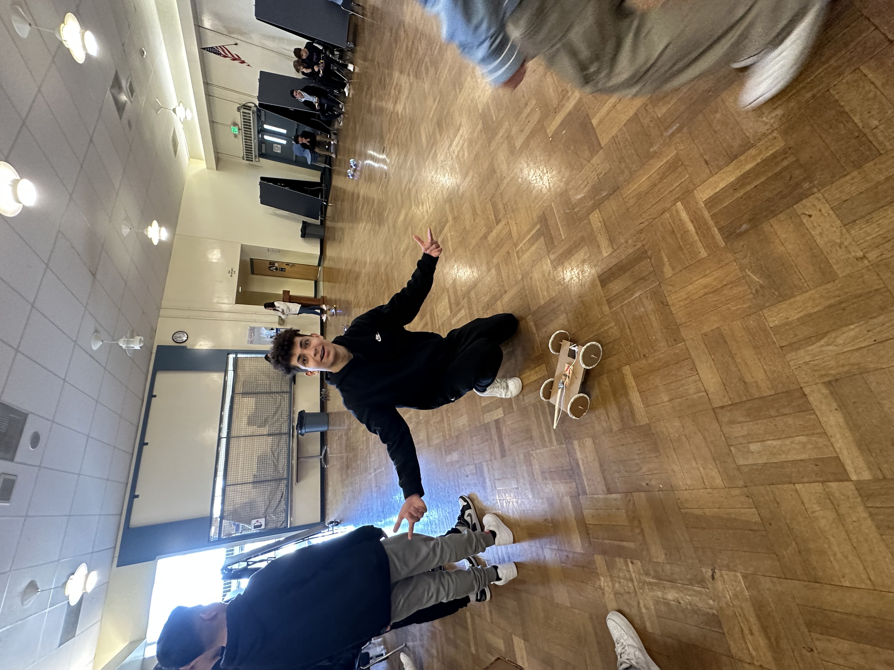

Hello World!
Noahs Website
Engineering Journal
9/2/22- We learned how to tinkercad. We had a competion with tinkercad and I made a stove. I came im 3rd
9/9/22- We designed our first tinkercad for our rube goldberg machine, we made a domino fall down to hit a car,then thee car hits a pendulum that had a needle attachted to it, which then popped a balloon
9/16/22- We had a competion with paper boats, our team made a boat by folding the paper, then folding the sides in so the water wont get in as easy,and in the end, we had the max time9/23/22- We finished our rube goldberg and it works good, we popped the balloon on our 5th try or around there
10/7/22- We made animal prosthetics on tinkercad and made pb&j sandwiches
10/13/22- We were given one piece of paper each, then told to fold,, bend, and shape the paper in any way we want to try to get it in a bucket, we then went to the top floor of the 1000 building, and tried to make the planes into the bucket
10/31/22- We learned how to use circuitry on Tinkercad, and we made alot of different circuits and expiremented with the voltage

11/10/22- We learned how to use circuits hands on, and we made LEDs light up. We also expiramented with the voltage

11/14/22- We learned how to code with arduinos, we logged in to the arduino website and made the lights flash, repeat, and have differnet voltages
11/28/22- We got told that our final was going to be a bridge, 2 ft long made of 20 spaghettis, we then tinkercaded different ideas we had for the bridge
12/5/22- For our first bridge, we made a bridge that was just a straight line that was covered in glue, it worked for a little, it bent more and more, then eventually broke
12/13/22- We made our final bridge and its very nice, its made by 3 lines of spaghetti, with smaller pieces on top, then a golden gate bridge type of suspension on top
12/20/22- Today was testing day, our spaghetti bridge was finally being put to the test. Everyone elses bridge held up quite good, but ours on the other hand, didnt. A teammate thought it was a good idea to hang the bucket from the center of our bridge, even though I told him not to, the second the bucket was placed, even without water, our bridge snapped into pieces
1/13/3- We are back from winterbreak and have learned about different ways of engineering. Such as chemical engineering, mechanical engineering, civil engineering, and electrical engineering
1/20/23- We learned the same thing as last week, but focused more on chemical engineering. We did a challenge, and we were told that we were gonna be doing a project that was a little harshly grade. We had the choice of mouse trap cars, an arduino car, or a research project, we chose the mouse trap car
3/7/23- For the past 6 weeks, we have been doing the project, we chose the mouse trap car. The car consisted of cardboard, tape, sticks, string, and a mouse trap. Our first iteration was a car with 4 large wheels, a big base, and long string. It worked perfectly, but didnt travel as far as we wouldve liked, so we toyed with it and it worked better. Then we thought that it was too heavy and too big. So, we made a much smaller one, which was a little bigger than the mouse trap itself,that had only 3 very small wheels and less glue, which made us think that the car would travel greater distances than the previous car, we finished building the car and to our surprise it did not work the way we thought, the moustrap was to strong compared to the weight and size of the body, so when we hit the ignition, the back wheels spun so fast the car didnt move, so we needed more weight. We used a rock from outside and hot glued it the the base, which worked. In the end, we used our first iteration because it was much more reliable.
4/10/23- we were told that we are going to start our final a week ago, a cardboard boat. we decided on making a giant
4/20/23- we are making a BMW boat that is 4ft wide and 6ft long, it has a BMW badge and a spoiler. We cannot use any other materials other than cardboard and one roll of duct tape
4/28/23- We have made our exterior mods for our bot, which include a BMW logo and a wing. We have also made the base for the boat, which consists of two 3 layer carboard squares. We taped the together and now we have the base. All thats left is to build the walls, attach them, and put on the mods.